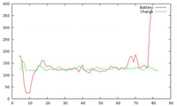

ibam
Dieser Artikel wurde für die folgenden Ubuntu-Versionen getestet:
Dieser Artikel ist größtenteils für alle Ubuntu-Versionen gültig.
Zum Verständnis dieses Artikels sind folgende Seiten hilfreich:
 IBAM
IBAM  (Intelligent BAttery Monitor) ist ein Werkzeug für mobile Rechner, um den Ladezustand des Akkus und die geschätzte verbleibende Restlaufzeit anzuzeigen. Während grafische Oberflächen diese Informationen meist über eine Energieverwaltung liefern, ist die Anwendung für die Kommandozeile konzipiert.
(Intelligent BAttery Monitor) ist ein Werkzeug für mobile Rechner, um den Ladezustand des Akkus und die geschätzte verbleibende Restlaufzeit anzuzeigen. Während grafische Oberflächen diese Informationen meist über eine Energieverwaltung liefern, ist die Anwendung für die Kommandozeile konzipiert.
Installation¶
IBAM ist in den offiziellen Paketquellen enthalten und kann über folgendes Paket installiert [1] werden:
ibam (universe)
 mit apturl
mit apturl
Paketliste zum Kopieren:
sudo apt-get install ibam
sudo aptitude install ibam
Benutzung¶
Grundlegende Information zum Akku-Status liefert der folgende Befehl:
cat /proc/acpi/battery/*/state
Beispiel:
present: yes capacity state: ok charging state: discharging present rate: 13276 mW remaining capacity: 23260 mWh present voltage: 12444 mV
Wie man leicht erkennen kann, sind diese Informationen für die Suche nach der nächsten Steckdose nur bedingt nützlich. Hier kommt IBAM ins Spiel. Die allgemeine Syntax von IBAM lautet [2]:
ibam [OPTIONEN]
Das Programm kennt die folgenden Optionen (Auszug):
| Optionen von IBAM | |
| Option | Beschreibung |
-a, --all | Alle Informationen anzeigen |
-b, --bios | BIOS APM Schätzung |
--battery | Absolute Restlaufzeit |
--batteryadaptive | Angepasste absolute Restlaufzeit |
--batterybios | show bios battery time guess |
--percentbattery | Relative Restlaufzeit |
--percentbios | Relative Restlaufzeit (BIOS) |
--charge | Absolute Ladezeit |
--chargeadaptive | Angepasste absolute Ladezeit |
--percentcharge | Relative Ladezeit |
--totalbattery | Totale absolute Restlaufzeit |
--totalbatteryadaptive | Totale angepasste absolute Restlaufzeit |
--totalcharge | Totale absolute Ladezeit |
--totalchargeadaptive | Totale angepasste absolute Ladezeit |
--profile | Weiteres, bisher ungenutztes Profil aktivieren |
--noprofile | Profilerstellung unterdrücken |
Weitere Details sind der Manpage und der Datei /usr/share/doc/ibam/README.gz zu entnehmen. Letztere lässt sich mit dem Befehl zless lesen:
zless /usr/share/doc/ibam/README.gz
Der Anzeigemodus wird mit der Taste Q beendet.
Beispiele¶
Die einfachste Variante:
ibam
Battery time left: 1:12:12 Adapted battery time left: 1:12:12
Wer diesen Befehl nicht immer wiederholen will, kombiniert ihn mit watch (Aktualisierung alle 60 Sekunden):
watch -n 60 ibam
Zum Beenden Strg + C drücken.
Alle verfügbaren Informationen anzeigen:
ibam -a
Bios percentage: 100 % Battery percentage: 100 % Soft low percentage limit: 5 % Charge percentage: 100 % Bios time left: 1:00:00 Battery time left: 1:54:00 Adapted battery time left: 1:54:00 Charge time left: 0:00:00 Adapted charge time left: 0:00:00 Total battery time: 1:54:00 Adapted total battery time: 1:54:00 Total charge time: 2:00:00 Adapted total charge time: 2:00:00 Profile logging enabled. Current file: /home/BENUTZERNAME/.ibam/profile-000-full

Gnuplot¶
In Kombination mit Gnuplot lässt sich neben der reinen Textausgabe auch eine grafische Anzeige realisieren (X-Achse: Ladezustand in Prozent, Y-Achse: Zeit). Dazu wird das folgende Paket benötigt:
gnuplot (universe)
mit apturl
Paketliste zum Kopieren:
sudo apt-get install gnuplot
sudo aptitude install gnuplot
Bei jedem Aufruf von ibam wird ein Datensatz erstellt und im Ordner ~/.ibam/ gespeichert. Daher muss man zuerst mit watch (siehe oben) und der Option --profile oder dem GKrellM-Plugin (siehe unten) das Programm periodisch aufrufen, um diese Datensätze zu erzeugen. Erst dann kann der Befehl:
ibam --plot
eine Ausgabe erzeugen.
| Optionen zur Grafikerstellung | |
| Option | Beschreibung |
--plot[=profiles] | Gnuplot verwenden, um den Verlauf von Akku- und Ladestatus grafisch darzustellen. Optional kann mit =PROFILNAME ein solches ausgewählt werden. |
--plotderivations[=profiles] | wie oben plus Standardableitung |
--plotdeviations[=profiles] | wie oben plus Standardabweichung |
GKrellM¶
IBAM kann auch mit dem grafischen Systemmonitor GKrellM kombiniert werden. Dazu braucht man neben GKrellM selbst noch das folgende Paket:
gkrellm-ibam (universe)
mit apturl
Paketliste zum Kopieren:
sudo apt-get install gkrellm-ibam
sudo aptitude install gkrellm-ibam
Dann öffnet man mit einem Rechtsklick  auf Rahmen oder Titel die Konfiguration von GKrellM und aktiviert das Plugin unter "Einstellungen -> Erweiterungen".
auf Rahmen oder Titel die Konfiguration von GKrellM und aktiviert das Plugin unter "Einstellungen -> Erweiterungen".
Links¶
Debian – How to monitor battery capacity
- Blogbeitrag 01/2013Shell/Anwendungen - Übersicht zu Programmen für die Shell
- Erstellt mit Inyoka
-
 2004 – 2017 ubuntuusers.de • Einige Rechte vorbehalten
2004 – 2017 ubuntuusers.de • Einige Rechte vorbehalten
Lizenz • Kontakt • Datenschutz • Impressum • Serverstatus -
Serverhousing gespendet von